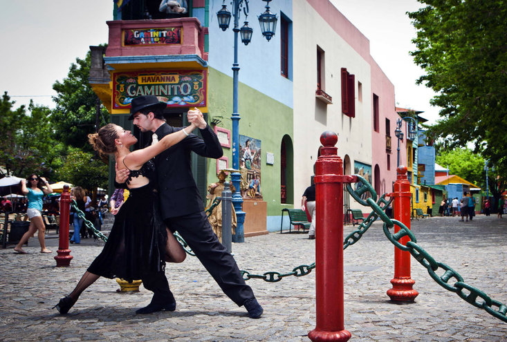
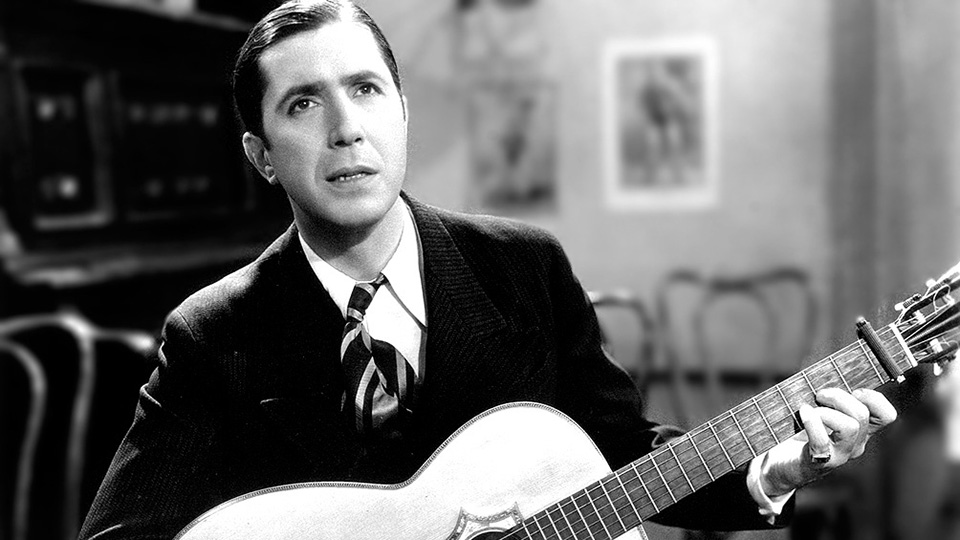

Le tango est un genre musical et une danse caractéristique de la région du Río de la Plata et de sa zone d'influence, mais principalement des villes de Buenos Aires (en Argentine) et de Montevideo (en Uruguay). L'écrivain Ernesto Sabato a souligné la condition "hybride" du tango. Le poète Eduardo Giorlandini met en valeur ses racines afro-rivières, avec la culture gaucho, espagnole, italienne et l'énorme diversité ethnique de la grande vague d'immigration arrivant principalement d'Europe. La chercheuse Beatriz Crisorio affirme que « le tango doit des apports multiethniques, grâce à notre passé colonial (autochtone, africain et créole) et à l'apport successif de l'immigration ». Depuis, il reste l’un des genres musicaux dont la présence est devenue familière dans le monde entier, ainsi que l’un des plus connus.
Différentes enquêtes mettent en évidence six principaux styles musicaux qui ont marqué le tango : le tango andalou, la habanera cubaine, le candombe, la milonga, la mazurka et la polka européenne.
Le tango a révolutionné la danse populaire en introduisant une danse sensuelle avec un couple enlacé qui propose une relation émotionnelle profonde de chacun avec son propre corps et des corps des danseurs entre eux. Faisant référence à cette relation, Enrique Santos Discépolo, l'un de ses plus grands poètes, a défini le tango comme « une pensée triste qui se danse ».
Musicalement, il a généralement une forme binaire (thème et refrain) ou ternaire (deux parties auxquelles s'ajoute un trio). Son interprétation peut être réalisée par une grande variété de formations instrumentales, avec une prépondérance classique de l'orchestre et du sextet de deux bandonéons, deux violons, piano et contrebasse. Sans être exclusif, le bandonéon occupe une place centrale.
La plupart des paroles de leurs chansons sont écrites dans un argot local de River Plate appelé lunfardo et expriment généralement les émotions et la tristesse que ressentent les hommes et les femmes de la ville, en particulier « dans les choses d'amour ».
En 1996, l'Argentine a déclaré le tango partie intégrante de son patrimoine culturel. Le 30 septembre 2009, à la demande des villes de Buenos Aires et de Montevideo, l'UNESCO l'a déclaré patrimoine culturel immatériel de l'humanité (PCI).
Le tango en tant que danse a commencé à émerger au milieu du siècle dans ce qu'on appelait les rives ou banlieues de villes comme Buenos Aires et Montevideo, c'est-à-dire les zones marginales habitées par les secteurs populaires. Dans ces banlieues, c'est au sein des communautés Afro-River Plate, en phase finale de libération de l'esclavage, que furent installés des lieux de danse et de divertissement populaires, appelés « academias », « milongas », « piringundines » ou « canguelas » au cours de cette période le tango serait inventé.
Les protagonistes étaient les communautés Afro-River Plate elles-mêmes avec leurs types sociaux appelés "negros", "negras", "pardos" et "pardas", et les populations rurales mixtes en cours de migration vers les villes appelées "chinas" et " compadritos", ce dernier protagoniste marquant de l'origine du tango en tant que danse.
En outre, les académies et les milongas ont également accueilli la présence croissante d’une vague d’immigrants venus des pays les plus divers d’Europe et du Moyen-Orient, pour la plupart italiens.
Le premier drapeau argentin était constitué d'un carré bleu clair cousu à un carré blanc de même taille (les mesures sont imprécises, car ces drapeaux ont été fabriqués par des soldats en service dans des circonstances parfois défavorables qui ne permettaient pas de prendre autant de temps la confection d'un insigne).
La conception des bandes horizontales a été progressivement modifiée car parfois les drapeaux étaient de tailles disproportionnées et devaient être hissés de différentes manières.
Le tango est né comme musique instrumentale exclusivement destinée à être dansée. Au fil du temps, il intègre le chant, presque toujours en solo, éventuellement en duo, sans chœur ni harmonies, mais en gardant une séparation assez marquée entre les tangos instrumentaux et les tangos chantés.
Dans les premières décennies du XXe siècle, il n’y avait pas de radio et le cinéma était silencieux, ce qui rendait le théâtre très populaire. Pascual Contursi, Celedonio Flores, Enrique Santos Discépolo, Homero Manzi, pour n'en nommer que quelques-uns, étaient des gens de théâtre et écrivaient des vers pour des pièces de théâtre, certains en lunfardo. Il est logique de dire que le chant du tango a été éclairé par le théâtre et le tango est souvent comparé à une pièce de théâtre dramatique : le chanteur de tango raconte justement un drame. C'est aussi grâce à Carlos Gardel lui-même, qui a choisi d'interpréter et de mettre en mélodie les vers qui traduisaient le mieux les sentiments de l'homme de la ville, ses personnages, sa langue, ses lieux et ses particularités et, surtout, l'esprit du peuple. .
L'écrivain Jorge Luis Borges disait qu'il n'aimait pas écouter Gardel parce qu'il faisait pleurer les habitants de Buenos Aires avec ses tangos. Carlos Gardel était un homme très charismatique et heureux mais avec une tendance à la dépression. Réservé et humble, il préférait perdre plutôt que d’être en désaccord. Dépendant de ses affections, mais avec un besoin incontrôlable de faire connaître le tango au monde entier. On retrouve de nombreux traits de sa personnalité dans la chanson de tango. José Razzano a déclaré qu'il le trouvait parfois mélancolique et pensif, comme s'il souffrait intensément.
La poésie du tango a la caractéristique inhabituelle d'être considérablement complexe, avec l'utilisation de métaphores et de réflexions philosophiques et en même temps très populaire, surtout dans les couches les plus humbles de la population. Des images telles que « le mystère de l'adieu que sème le train » qu'utilise Homero Manzi dans Barrio de tango (1942), ou « les neiges du temps ont argenté mon temple » de Carlos Gardel dans Volver (1935), ou « ton mélange miraculeux de je-sais-tout et suicides » créé par Enrique Santos Discépolo dans Cafetín de Buenos Aires (1948), ou « l'encre rouge dans le gris d'hier » que Cátulo Castillo a mis dans Red Tinta (1941), réunissent une grande complexité poétique et en même temps une grande popularité, qui a persisté au fil des années.
Carlos Gardel
Carlos Gardel était un chanteur, compositeur et acteur de cinéma argentin nationalisé né au XIXe siècle et décédé en 1935. Il est le représentant le plus connu du genre dans l'histoire du tango. Initiateur et plus grand représentant du chant tango, il fut l'un des interprètes les plus importants de la musique populaire mondiale de la première moitié du XXe siècle, pour la qualité de sa voix, pour le nombre de disques vendus (en tant que chanteur et compositeur). ), pour ses nombreux films liés au tango et pour son impact mondial.
Il n’y a pas d’unanimité sur le lieu et la date de sa naissance. L'hypothèse uruguayenne soutient qu'il est né à Tacuarembó (Uruguay), le 11 décembre, entre 1883 et 1887. L'hypothèse française soutient qu'il est né à Toulouse (France) le 11 décembre 1890. Il y a unanimité sur le fait qu'il a vécu son enfance à Buenos Aires et est devenu ressortissant argentin en 1923. Il est décédé le 24 juin 1935 à Medellín, en Colombie, dans un accident d'avion.
La personne et l'image de Gardel ont fait l'objet d'une idolâtrie populaire, notamment en Argentine, en Uruguay et en Colombie, dans un lieu de mythe et de symbole culturel qui conserve encore sa validité.
En 2003, la voix de Gardel a été inscrite par l'UNESCO dans le programme Mémoire du monde, dédié à la préservation des documents appartenant au patrimoine historique des peuples du monde. En même temps, on fait référence à sa voix et à sa mémoire avec la phrase « il chante mieux chaque jour ».

Couple de tango
En arrière-plan le quartier de La Boca

Carlos Gardel
Symbole mondial du tango
Créé par Alejo Tenaglia - Service Civique LEGTA Pau Montardon